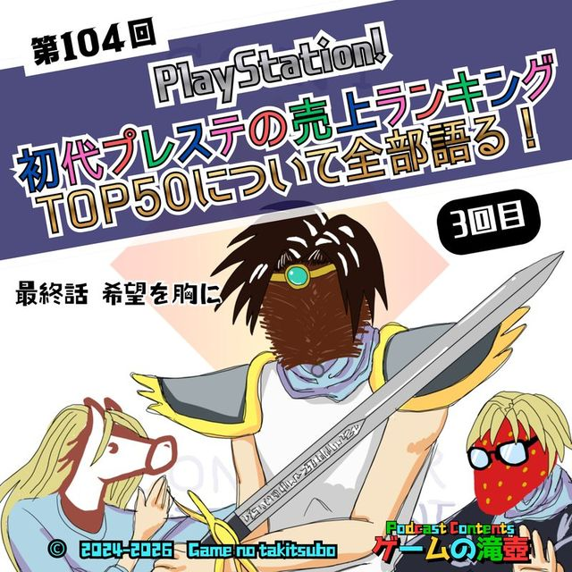
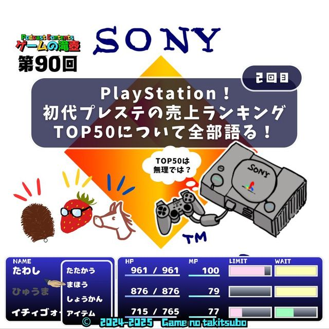
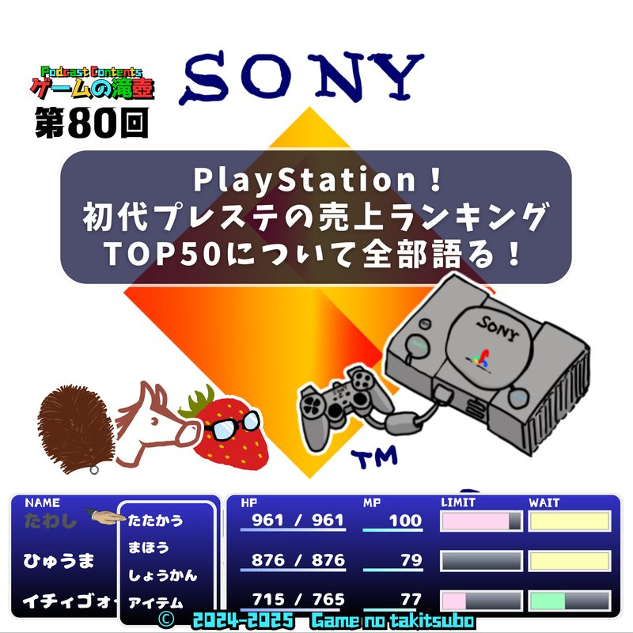
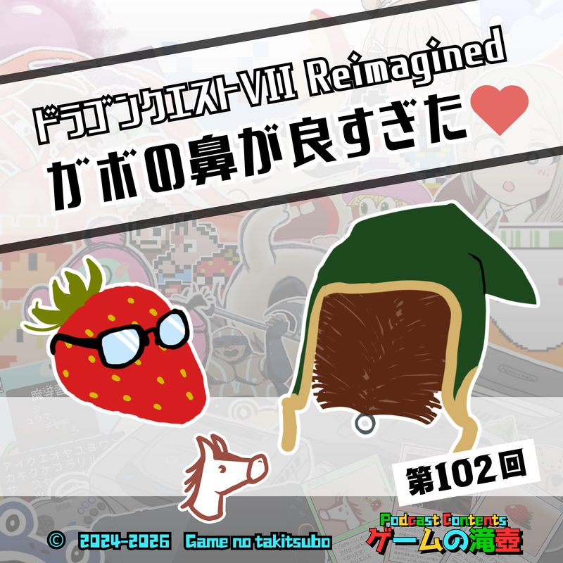
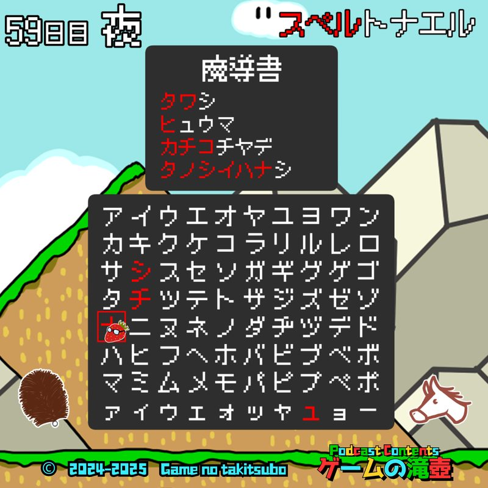

ファイナルファンタジーIX
ポッドキャスト「ゲームの滝壺」で「ファイナルファンタジーIX」が話題に出た回の一覧です。
滝壺での登場 5回コーナーやチャプターの話題として語られています。

#1042026.05.06📑 チャプターで登場 PlayStation！ 初代プレステの売上ランキングTOP50について全部語る！ 3回目（最終回） ▶ 06:18〜 第4位 ファイナルファンタジーIX初代プレステの売上ランキングTOP50について… ついに話し切りました！
#902026.01.28📑 チャプターで登場 PlayStation！ 初代プレステの売上ランキングTOP50について全部語る！ 2回目 ▶ 08:43〜 第4位 ファイナルファンタジーIX前回10位までしか話せなかったので、2回目の挑戦です！ やり直しなので当然、1位から見ていきます。当然です。
#802025.11.26📑 チャプターで登場 PlayStation！ 初代プレステの売上ランキングTOP50について全部語る！ ▶ 21:44〜 第4位 ファイナルファンタジーIXSFCに続いて、初代プレイステーションの売り上げランキングTOP50について全部語る！ 予定ですが、なかなか難しいものですね。
#1022026.04.22💬 トーク内で登場 ガボの鼻が良すぎたドラゴンクエストVII Reimagined ドラクエ7の話がようやくできました！ いろんな鼻を見てきましたが、間違いなく一番いい鼻です。ガボの鼻。
#592025.07.09💬 トーク内で登場 スペルトナエル が タノシイハナシ 恐ろしく安いのにあまりにも面白いゲーム、スペルトナエルについて話します！SAME SERIES同シリーズのタイトル
TALKED TOGETHER同じ回で話題に出たタイトル
🎧 ▶付きの時刻を押すと、その話題の頭からその場で再生できます。
「ファイナルファンタジーIX」の話がもっと聴きたくなったら、おたよりでリクエストしてもらえると番組が喜びます。